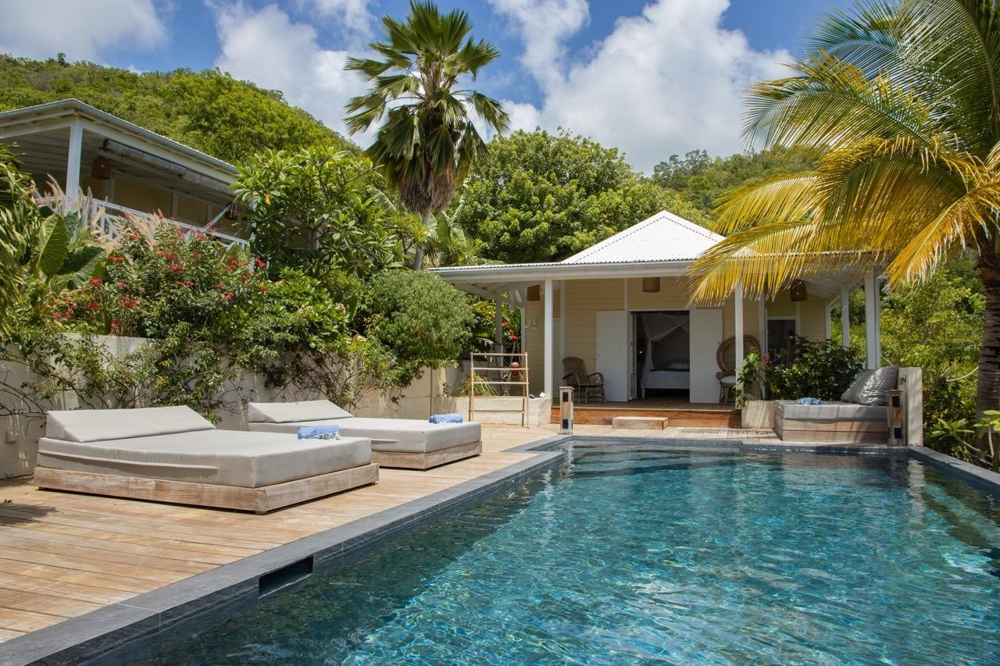
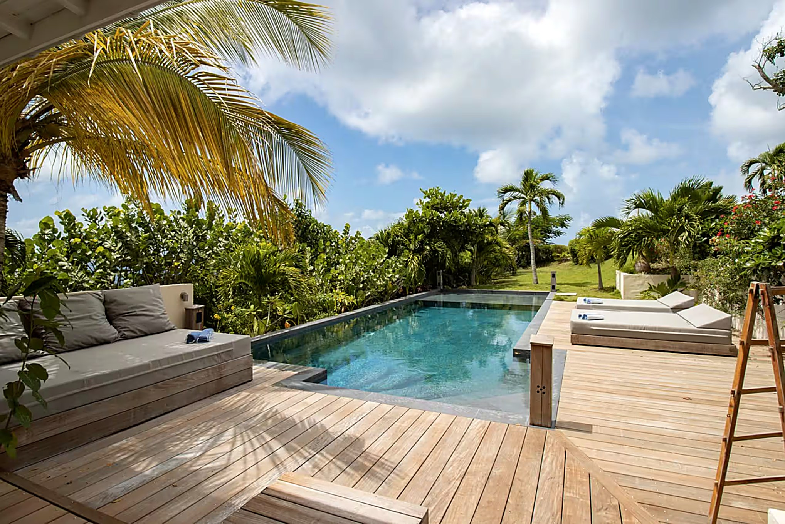
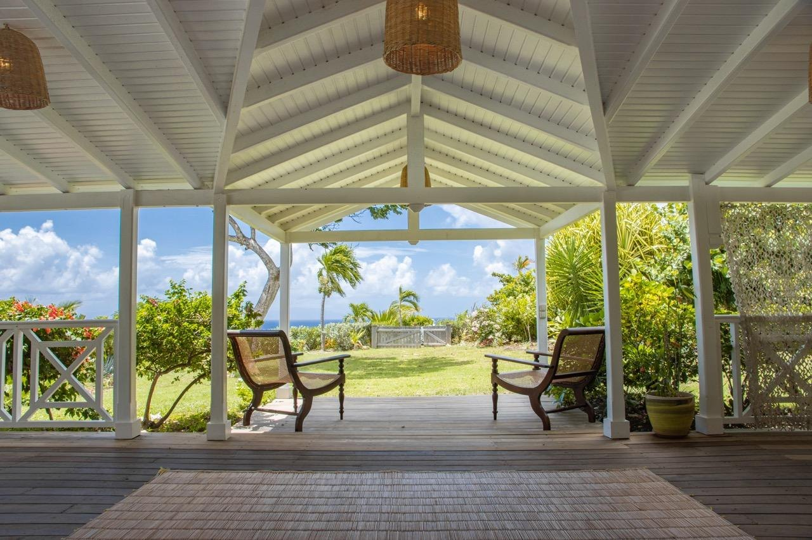
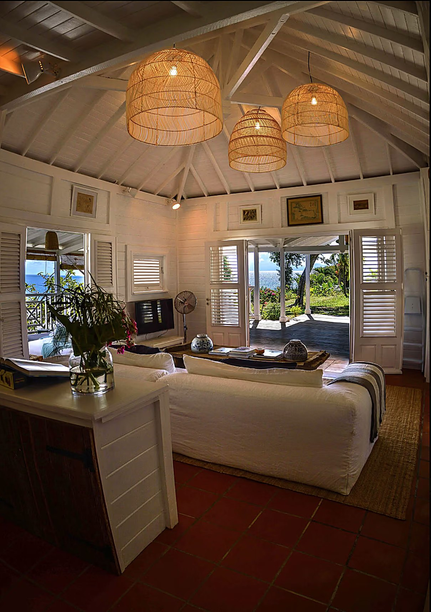

Villa La Vanille
Villa criolla, piscina y vista al canal de Dominica.
Ver disponibilidadDos casas criollas, un jardín tropical y el mar como único horizonte. Aquí los días se cuentan en baños y atardeceres.
- 12huéspedes
- 5habitaciones
- 5baños
- 2 000m² de jardín
La villa

La piscina
Una piscina de agua salada climatizada frente al mar. Con su solárium de madera, sus tumbonas y el jardín tropical alrededor, es el corazón de la villa, de la mañana al atardecer.

La galería
Una galería de más de 80 m² abierta al jardín tropical, con vista al océano y a la isla de Dominica. Desayuno, lectura a la sombra y siesta en la hamaca.


El salón catedral
Bajo una alta estructura de madera blanca, el salón se abre con grandes puertas de persianas a la galería y al mar. Sofá de lino, lámparas de ratán, baldosas de barro y objetos antiguos: un interior criollo luminoso, fresco y sereno.

La gran mesa
Bajo la galería, un comedor para doce personas. Por la noche, las lámparas de ratán y las velas acompañan largas cenas frente al jardín.
Las cocinas
Una cocina interior equipada, abierta a la galería, y una cocina exterior con barbacoa de gas y plancha.
Las habitaciones
Cinco habitaciones con aire acondicionado, repartidas en dos casas. Cada uno encuentra su espacio y su calma.
La casa principal
La casa de la piscina
Bajo petición, hay una habitación infantil de cuatro camas, con suplemento.
Servicios
La piscina de agua salada está climatizada y mira al mar. Todo lo demás está pensado para que no tenga que ocuparse de nada.
- Piscina de agua salada climatizada con vista al mar
- Cocina interior equipada y cocina de verano
- Barbacoa de gas y plancha
- Aire acondicionado en todas las habitaciones
- Wi-Fi y espacio de trabajo
- Jardinero y técnico de piscina cada semana
Una conserjería a su servicio
Tanto si desea reservar billetes de barco, un coche de alquiler, un taxi, un chef a domicilio, actividades, un masaje, una salida en barco o simplemente recibir consejos para organizar su estancia, Fabie está ahí para acompañarle.
Además de sus valiosos consejos, le ofrecerá tarifas preferentes y códigos promocionales exclusivos MGVIP con numerosos socios locales.
Galería
Marie-Galante, la isla de los cien molinos
Redonda como una galleta y rodeada de un mar turquesa, Marie-Galante conserva lo que el Caribe a veces ha perdido: playas sin multitudes, campos de caña hasta el horizonte y una forma de vida auténtica y serena. Esto es lo que le espera, a pocos minutos de la villa.
Prepare su estancia
Llegar a Marie-Galante
En barco desde Pointe-à-Pitre hasta el puerto de Grand-Bourg, en una hora aproximadamente. O en avioneta hasta el aeródromo de la isla. La villa está a 3 km del pueblo y del puerto.
Moverse por la isla
Se recomienda alquilar un coche para disfrutar de las playas y los lugares de interés. La isla es pequeña: todo está a menos de 30 minutos en coche.
Cuándo venir
Todo el año. La temporada seca, de diciembre a mayo, es la más solicitada. El festival Terre de Blues se celebra cada primavera.
Nuestra conserjería le ayuda
Billetes de barco, coche de alquiler, chef a domicilio, salidas en barco: Fabie lo organiza todo y le ofrece códigos promocionales MGVIP con sus socios.
Nuestros huéspedes
4,94
sobre 5, según 17 opiniones en Airbnb. Favorito entre huéspedes.
- 4,8Limpieza
- 5,0Veracidad
- 5,0Llegada
- 4,9Comunicación
- 5,0Ubicación
- 4,9Calidad-precio
Condiciones y tarifas
El precio depende del número de habitaciones abiertas. Tarifas fuera de los periodos festivos y del festival Terre de Blues.
| Opción | Precio / noche | Precio / semana |
|---|---|---|
| 1 habitación | 250 € | 1.750 € |
| 2 habitaciones | 300 € | 2.100 € |
| 3 habitaciones | 350 € | 2.450 € |
| 4 habitaciones | 400 € | 2.800 € |
| 5 habitaciones | 475 € | 3.325 € |
Condiciones
- Estancia mínima
- 3 noches
- Llegada
- A partir de las 18 h
- Salida
- Antes de las 10 h
- Gastos de servicio
- 290 €
- Tasa turística
- 2 € por persona y nocheEl importe de la tasa turística se calcula según las modalidades establecidas por las autoridades locales. Al tratarse de un impuesto, es idéntico sea cual sea el origen de la reserva.
- Pago
- Con tarjeta: 50 % al reservar y el resto 30 días antes de la llegada
- Fianza
- 1.500 €
- Seguro de cancelación
- Desde el 3 %
Bueno saber
- No se admiten mascotas.
- No se permiten fiestas. Las cenas con amigos son bienvenidas.
- La piscina no está vigilada.
- La villa no está adaptada a niños muy pequeños.
Reservar
Las reservas las gestiona nuestro servicio de conserjería. Consulte la disponibilidad y reserve su estancia en línea.
Ver el calendario y reservar